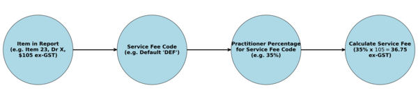

The Guide to Setting Up Service Fee Codes
Introduction
Service fee codes are a structured way to manage service fees associated with different service items in a company. Each service item is assigned a service fee code, which represents the percentage of the fee payable to the service company. This system provides flexibility in managing service fees across various providers and service items without requiring a large and complex table.
Key Concepts
- Service Fee Code: A user-created code representing a percentage of the service fee.
- Service Fee Aggregation: Grouping service items with the same fee percentage for efficiency.
- Flexibility: Different providers and items can have varying service fee percentages.
- GST Application: GST is excluded from the percentage and added separately.
Step-by-Step Implementation
- Enter company details.
- Enter practitioner details.
- Create a default service fee code (e.g.,
DEF).
- Set default service fee percentages for providers.
- Create additional service fee codes if needed.
- Enter service rates in the provider setup screen.
- Import the Payments Export Report (CSV format).
- Identify and assign service fee codes to missing items.
- Verify and process the report in the dashboard.
Diagram of Service Fee Calculation - Hit the Process button
- For each item in the Payments Export report:
- The item, the fee and the practitioner are extracted,
- PRIMS looks up the Service Fee Code that you assigned the item,
- PRIMS looks up the percentage of the fee for the practitioner for that Service Fee Code,
- PRIMS calculates the service fee on the non-GST component of the fee (% x fee).
- PRIMS totals all the fees for each practitioner, then creates a Tax Invoice, adding 10% GST.
- These Tax Invoices are downloadable individually or as a ZIP file.
- A file for importation of the invoice data into Xero is also created.

Conclusion
By implementing service fee codes, businesses can simplify financial management, ensure accuracy in service fee application, and reduce administrative burden. This system provides flexibility and aligns with service agreements, making it a valuable tool for organisations managing multiple providers and service items.